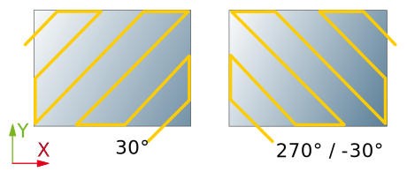
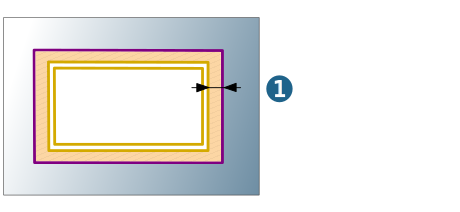
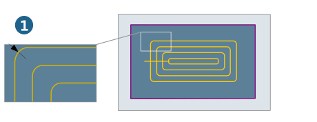
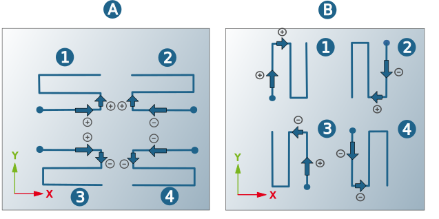
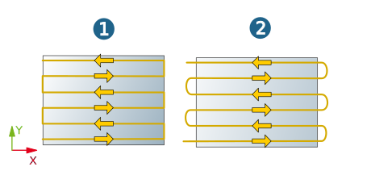
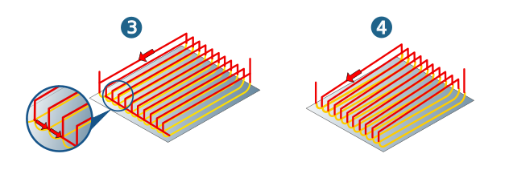

Strategy
Surface selection
|
Select machining surfaces. |

Step strategy
X/Y axis: The X or the Y axis of the frame is used as guide curve for standard profiles. Normally, the machining area is to be limited with a boundary. The guide curve for machining is the X axis. For each machining mode, the following applies in the default setting:
-
The first milling path runs in the positive X direction.
-
The first infeed movement (horizontal) is executed to the left, i. e. in positive Y direction.
Machining angle: Enter the angle of rotation required for machining.
|  |
Rule: Ruled profiles need two guide curves which do not cross each other and have the same direction. The following applies in the default setting (no reversal of milling and infeed direction): The first milling path is machined from the inside (shorter) to the outside (longer) guide curve (1) and the (horizontal) infeed distance defined is applied to the outside (longer) guide curve (2).
Flow: Flow profiles need two guide curves (3, 4) that do not intersect and have the same direction. In case of opposed direction reverse the direction of one guide curve:
|  |
Pocket: Pre-machined pockets are finished with the pocket profile up to a certain allowance. Note: closed 3D contours are used as the profile. One or more pocket profiles can be selected per cycle. With nested pocket profiles (inside one another), island detection is automatic.
Pre-machined contour
Offset (1): Existing material width on the machining contour in connection with pre-machined pockets.
|  |
Toolpath fillets
Fillet radius: Abrupt changes in direction within the cutting toolpaths are rounded with the specified radius.
Connect factor: Ramped connect from one infeed plane to the next.
If a link with the selected connect factor is not possible due to a potential collision, a reduced value is automatically used for the calculation. If this is not possible, a tool path with the connect factor 0.0 is generated. In both cases, a corresponding message will be displayed.
Fillet all toolpaths: model contour corners are rounded with the radius defined above, with the result that the machining contour deviates from the model contour at the corners (1).
|  |
Stepover Direction/Cutting mode
Pocket profiles are always machined contour-parallel with climb or conventional milling. Adapt the path direction (climb/conventional milling) and infeed direction (inside out/outside in) to the contour to be machined (pocket or island).
Reverse direction
Both the milling and infeed direction can be customized in order to make optimal adjustments to the milling paths to the surface.
Milling path: Reverses the machining direction.
Horizontal stepover: Reverses the infeed direction.
The graphic illustrates the effect of the direction changes on the location and direction of the first milling path (represented in the zigzag mode): A) X axis, B) Y axis, 1) Without reversal, 2) Reversed machining direction, 3) Reversed infeed direction, 4) Both directions reversed.
|  |
Infeed mode
Zigzag direct (1): The machining direction changes per section. The infeed movement follows the shortest path.
Zigzag smooth (2): The machining direction changes per section. The infeed looks like a loop.
|  |
Parallel (3): The tool initially retracts parallel to the generated milling path to the start point of the (vertical) infeed movement. This is followed by a horizontal stepover using the shortest distance possible.
Diagonal (4): Infeed diagonal from the endpoint to the next starting point
Parallel (3): The tool initially retracts parallel to the generated milling path to the start point of the (vertical) infeed movement. This is followed by a horizontal stepover using the shortest distance possible.
Diagonal (4): Infeed diagonal from the endpoint to the next starting point
|  |